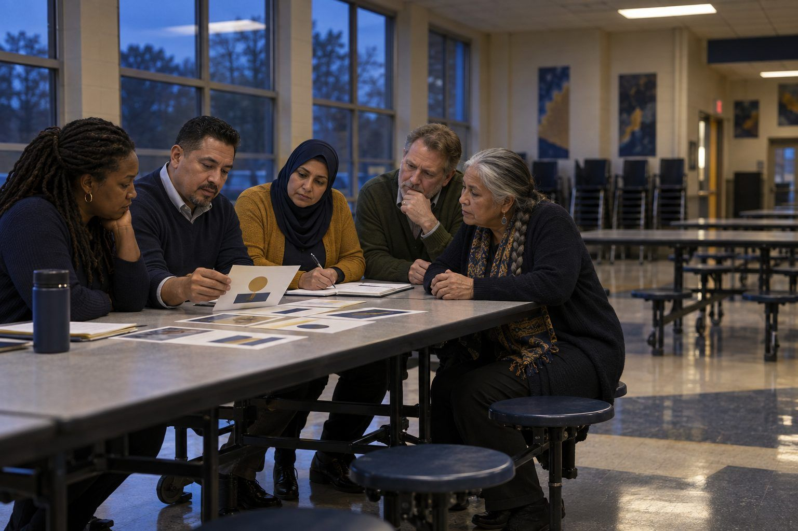

Aprendizaje profesional · Líderes, Personal · 70 minutos
¿De verdad es nuestra directora? Simulacro de crisis con medios sintéticos
Un audio falso de la directora circula en los grupos de padres un viernes por la noche, y el equipo directivo tiene dos horas de tiempo de juego para verificar, responder y reconstruir la confianza.
Las herramientas de clonación de voz y de video permiten poner palabras convincentes en boca de cualquiera, y los líderes escolares son visibles, aparecen en grabaciones y gozan de confianza, lo que los convierte en blancos. En este simulacro de mesa, un equipo de crisis trabaja con una cronología ficticia de un viernes por la noche en la que un audio sintético de la directora cancela un viaje e insulta a un vecindario. Los equipos deben separar lo que saben de lo que no saben, verificar sin depender de un detector, comunicarse con las familias en la primera hora y planificar cómo ayudar a toda la comunidad a detectar mejor el próximo caso. La lección más profunda es que la verificación es una práctica que se prepara antes de la crisis, no una herramienta que se busca durante ella.
En este paquete
- Hoja A: Tarjetas de la cronología del incidente (tarjetas para recortar)
- Hoja B: Registro de verificación y respuesta (organizador)
- Hoja C: Lista de verificación de preparación ante medios sintéticos (lista de verificación)
- Clave del facilitador (última página)
Indicadores ELE de TCEA
- L5.2 Puedo usar eficazmente herramientas de comunicación digital para compartir las metas y los logros de la escuela con las partes interesadas.
- L4.1 Sé cómo crear un clima de aprendizaje digital positivo e inclusivo.
- AI4.2 Puedo enseñar a otros a cuestionar y verificar las respuestas de la IA.
- AI1.2 Puedo explicar los conceptos de IA en términos sencillos a diversas partes interesadas.
Guía completa para el facilitador: mglearn.github.io/eles/es/activities/deepfake-principal-tabletop.html
Hoja A de ¿De verdad es nuestra directora? Simulacro de crisis con medios sintéticos
Tarjetas de la cronología del incidente
Escenario ficticio. Mantenga las tarjetas boca abajo y en orden, y voltee una a la vez cuando el facilitador dé la señal. El reverso contiene notas para el facilitador; imprímalo por separado.
Tarjeta 1 · Vie 6:40 p. m.
La subdirectora recibe un mensaje de texto de un padre: “¿¿Esto es real?? Todo el mundo lo está compartiendo”. Adjunta un audio de 35 segundos publicado en el grupo de Padres de Bluebonnet Springs. Suena como la directora, la Dra. Renee Okafor, diciendo que el viaje de la banda del sábado a la competencia regional se cancela por “una amenaza de seguridad”, seguido de un comentario despectivo sobre las familias de los apartamentos Riverbend.
Tarjeta 2 · Vie 6:52 p. m.
La Dra. Okafor contesta desde el estadio de fútbol americano, donde ha estado desde las 5:30 p. m. con decenas de miembros del personal y familias. “Yo nunca grabé eso. Jamás diría algo así”. El audio ya se ha compartido en tres grupos de padres y en una cuenta pública de redes sociales llamada @BSHSTruth, creada hace cuatro días.
Tarjeta 3 · Vie 7:05 p. m.
Llama el director de la banda: 40 familias han escrito para preguntar si se canceló el viaje. Los autobuses salen a las 6:00 a. m. La presidenta de la PTA dice que el chat grupal de las familias de Riverbend está enojado y dolido. Su equipo debe redactar un primer mensaje para las familias dentro de los 30 minutos de tiempo de juego.
Tarjeta 4 · Vie 7:30 p. m.
Un miembro del personal sugiere subir el audio a un “detector de voz con IA” gratuito en línea. El resultado: “87% de probabilidad de ser humano”. Ahora algunos miembros del personal se preguntan si la Dra. Okafor de verdad lo dijo y lo olvidó.
Tarjeta 5 · Vie 7:50 p. m.
Una reportera de una televisora local escribe al distrito: “Estamos al tanto de una grabación de la directora de Bluebonnet Springs. ¿Pueden darnos un comentario antes de las 9 p. m.?”.
Tarjeta 6 · Vie 8:15 p. m.
Un estudiante le escribe al consejero: un compañero presumió en un chat grupal que “hizo que la directora dijera cosas” con una aplicación gratuita, “de broma”. El estudiante tiene miedo de que lo identifiquen.
Tarjeta 7 · Sáb 5:30 a. m.
Los autobuses se están cargando. Once estudiantes de la banda no han llegado, y tres de sus familias viven en Riverbend. Una madre le dice al director de la banda: “Pensamos que no éramos bienvenidos”.
Tarjeta 8 · Lun 7:30 a. m.
El rumor ya fue desmentido, pero el audio sigue circulando en algunos grupos y unas cuantas familias todavía lo creen. El personal pregunta si esto podría pasarles a ellos. Los estudiantes hablan del tema en todos los pasillos.
Hoja B de ¿De verdad es nuestra directora? Simulacro de crisis con medios sintéticos
Registro de verificación y respuesta
Actualícelo después de cada tarjeta. Mantenga los hechos verificados separados de lo que sospechan.
| Hora del juego | Lo que sabemos (verificado, y cómo) | Lo que aún no sabemos | Acción + responsable | Mensaje enviado (a quién, por qué canal) |
|---|---|---|---|---|
| Vie 6:40 p. m. | ||||
| Vie 6:52 p. m. | ||||
| Vie 7:05 p. m. | ||||
| Vie 7:30 p. m. | ||||
| Vie 7:50 p. m. | ||||
| Vie 8:15 p. m. | ||||
| Sáb 5:30 a. m. | ||||
| Lun 7:30 a. m. |
Hoja C de ¿De verdad es nuestra directora? Simulacro de crisis con medios sintéticos
Lista de verificación de preparación ante medios sintéticos
Evalúe su propio campus con honestidad. Encierre en un círculo los tres elementos en los que su equipo actuará primero.
| Sí | En parte | No | |
|---|---|---|---|
| Las familias conocen nuestros canales oficiales para cancelaciones y emergencias, y los usamos siempre. | |||
| Nuestro plan de comunicación en crisis indica quién verifica un rumor y quién aprueba el primer mensaje. | |||
| Tenemos una plantilla de primer mensaje en lenguaje sencillo que funciona cuando no tenemos todos los datos. | |||
| Podemos enviar mensajes urgentes en los idiomas que hablan nuestras familias, por mensaje de texto y por correo electrónico. | |||
| El personal sabe que no debe reenviar medios sospechosos de ser falsos, ni siquiera para reportarlos, más allá de las personas que los necesitan. | |||
| Nuestros líderes saben que las herramientas de detección de IA no son lo bastante confiables para decidir qué es real. | |||
| Nuestro código de conducta estudiantil aborda la creación o difusión de medios sintéticos de estudiantes o del personal. | |||
| Los estudiantes aprenden a verificar audios y videos sorprendentes comprobando la fuente y el contexto. | |||
| Se ha ofrecido a las familias una sesión o un recurso para detectar medios manipulados y sintéticos. | |||
| Tenemos un plan para reparar el daño a cualquier grupo afectado por un rumor, no solo para corregir los hechos. | |||
| Hemos informado con anticipación a nuestra comunidad cómo confirmaremos siempre los anuncios reales (una prevacuna). |
Notas
Solo para el facilitador: ¿De verdad es nuestra directora? Simulacro de crisis con medios sintéticos
Clave de respuestas y notas
Hoja A: Tarjetas de la cronología del incidente
- Tarjeta 1 · Vie 6:40 p. m.
- Primera decisión: ¿quién necesita saberlo ahora mismo y quién se encarga de la verificación? Los equipos sólidos contactan a la directora de inmediato y empiezan un registro. Nota: nadie debe reenviar el audio más de lo necesario, ni siquiera internamente.
- Tarjeta 2 · Vie 6:52 p. m.
- Dos hechos de verificación sólidos: una coartada pública a la hora de la publicación y una cuenta recién creada como primera en publicarlo. Los equipos deben anotarlos como hechos verificados. Todavía no saben quién hizo el audio.
- Tarjeta 3 · Vie 7:05 p. m.
- Presión de tiempo. El mensaje debe salir antes de tener certeza total. Busque: el viaje sigue en pie; la grabación no provino de la directora ni de la escuela; no la compartan; las actualizaciones aparecerán en el canal oficial; una oración que aborde el daño a las familias de Riverbend.
- Tarjeta 4 · Vie 7:30 p. m.
- La tarjeta clave de aprendizaje. Las herramientas de detección no son confiables, y subir el audio podría difundirlo aún más. La coartada y la procedencia son evidencia más sólida que el puntaje de un detector. Observe si los equipos dejan que el número de una sola herramienta se imponga al contexto verificado.
- Tarjeta 5 · Vie 7:50 p. m.
- Pone a prueba si el equipo conoce el protocolo de su distrito: ¿quién habla con los medios? Los equipos sólidos remiten esto a la oficina de comunicaciones del distrito y preparan una declaración breve coherente con el mensaje a las familias.
- Tarjeta 6 · Vie 8:15 p. m.
- Decisiones: proteger al estudiante que reportó, seguir el código de conducta estudiantil y la política del distrito sobre investigaciones, e involucrar a los líderes del distrito. Los equipos no deben nombrar públicamente a ningún estudiante. Algunos distritos involucrarán a las autoridades; siga su protocolo.
- Tarjeta 7 · Sáb 5:30 a. m.
- El daño persiste después de que los hechos quedan claros. Busque equipos que hayan planificado un contacto directo y personal con las familias de Riverbend, no solo un mensaje masivo.
- Tarjeta 8 · Lun 7:30 a. m.
- Recuperación y prevención. Los equipos sólidos planifican: una reunión informativa para el personal, una lección para estudiantes sobre medios sintéticos, un seguimiento con las familias de Riverbend y un paso de alfabetización mediática para la comunidad. El incidente se convierte en una oportunidad de aprendizaje sin volver a difundir el audio.